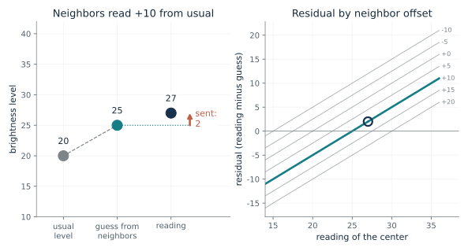
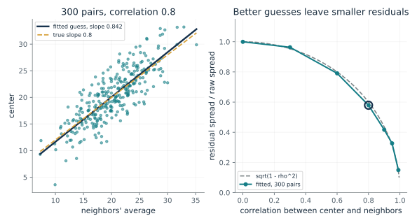
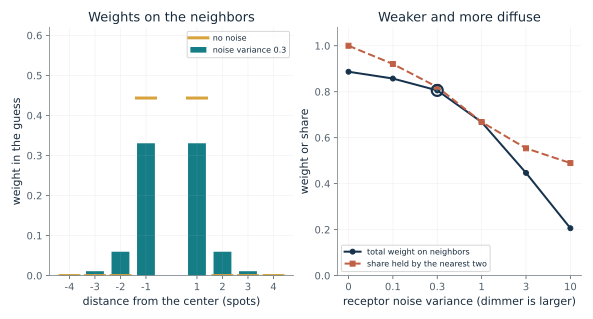
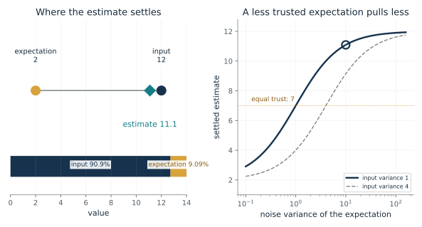
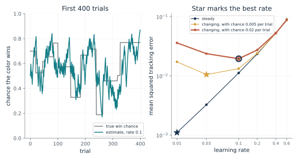
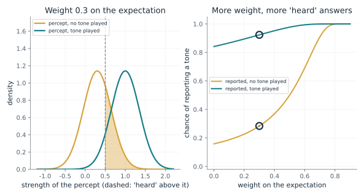
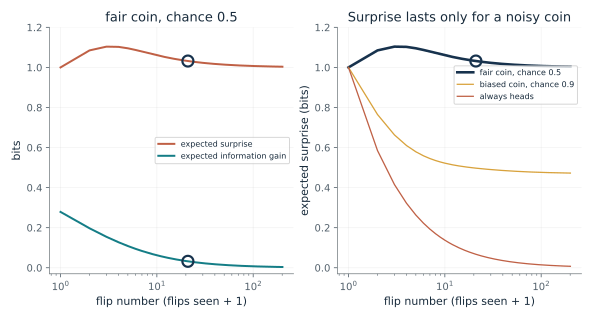

Ask what the guess is, how reliable it has been compared with the new reading, and whether the world is steady or changing. Use the residual when a sender and receiver share a guess, the settling rule to weigh an expectation against an input, a learning-rate comparison when the question is how far to move a forecast, and the surprise-versus-information card before rewarding a system for prediction error. Remember that a large residual does not say why it is large.
“My forecast for a delivery was 10 days and it took 14. How much should I change next week's forecast, and what would tell me whether the miss was noise or a change?”
Use mmi-ch04-expecting-world with the companion's AI skill package. The illustrations below also work on their own.
How much does a shared guess leave to send?
From Chapter 4, Sending only what the guess missed
A sender and receiver share a guess for the center spot from its neighbors. If the neighbors read 10 above their usual level, what is sent when the center reads 22, or 27?
The receiver builds the same guess from the neighbors and adds the residual to it. Nothing is lost: the reading is recovered exactly. What changes is the size of the number that has to be sent, which is the miss and not the reading.
Predict first: The usual level is 20, the fraction is one half and the neighbors read 10 above usual. Predict the residual if the center reads 22, then if it reads 27.

Neighbors' reading above or below usual: 10 · Center reading: 27
What happens: The guess is 25. A reading of 22 leaves a residual of -3 and a reading of 27 leaves 2. Try a neighbor offset of -10 with a reading of 27: the guess is 15 and the residual is 12, larger than the 7 the reading sits above its usual level, so a bad guess costs more than none.
The neighbors read +10 from their usual level, so the guess is 20 + 0.5 x 10 = 25. A reading of 27 leaves a residual of 2, which the receiver adds back to the guess to recover 27.
- Guess
- 25
- Residual sent
- 2
- Reading minus usual
- 7
- Size saved
- 5
A cell or a code has only so many signal levels to spend. If neighbors have already said most of what the center will say, the whole range can go to the small difference left over.
Srinivasan, Laughlin and Dubs proposed in 1982 that a cell's surround is a weighted average of neighboring receptors, used as a guess that the cell subtracts from its center signal. The mechanism is a proposal.
A machine can fit the same guess from data with no cell involved and send only the residual; the saving depends on the guess and the required precision.
Show the calculation
Guess = 20 + 0.5 x 10 = 25. Residual = 27 - 25 = 2. Receiver: 25 + 2 = 27.
The equations and symbols
- c
- the center reading
- f - f-bar
- how far the neighbors' weighted average reads from its usual level
- c-bar
- the center's usual level, 20 here
- Cov / Var
- the fraction by which the center follows its neighbors, one half here
- c-hat, e
- the guess for the center, and the residual sent
The sender and receiver both know the center's usual level, the fraction and the neighbors' reading. Any saving depends on how good the guess is and how precisely the reading must be sent.
Check your understanding: In a three-level network, a long bar has input 10 and a prediction of 10, and a short bar has input 10 and a prediction of 4. What residual does each send?
Book source: Chapter 4, Sending only what the guess missed. Illustration C04-D01. Formula. The chapter's constructed numbers: usual level 20, a fraction of one half, neighbors 10 above their usual level, a guess of 25, and readings of 27 and 22 giving residuals 2 and -3. The chapter calls this the textbook form of the idea, not an equation quoted from Srinivasan, Laughlin and Dubs.
How does a machine fit the guess, and how much does it save?
From Chapter 4, A fly's ring against a fitted guess
If a machine counts how a center and its neighbors moved together over many examples, what guess does it fit and how much of the spread is left in the residuals?
If the center rises when the neighbors rise, a bright neighborhood lifts the guess. If the neighbors tell nothing, the guess falls back to the usual brightness and the whole reading must be sent. In between, the guess removes a share rho^2 of the variance and leaves 1 - rho^2.
Predict first: If the center follows its neighbors with correlation 0.8, predict what share of the raw spread is left in the residuals.

Correlation between center and neighbors: 0.8 · Number of example pairs: 300
What happens: With 3,000 pairs the fitted slope is 0.816 and the residuals keep 0.603 of the raw spread, close to the theory 0.6. With 30 pairs the slope is 0.878 and the share 0.564: a short record gives a rougher guess.
Fitted from 300 pairs, the guess has slope 0.842 against a true 0.8, and its residuals have 0.579 of the raw spread (theory 0.6). Sending the residual at the same precision then saves about 0.788 bits per reading; this bit count is the companion's addition.
- Fitted slope
- 0.842
- Residual spread / raw spread
- 0.579
- Theory sqrt(1 - rho^2)
- 0.6
- Bits saved at equal precision
- 0.788
A machine can fit this guess from examples and use it as a simple baseline before adding complexity. How much it saves depends on the correlation and on how precisely the reading must be sent.
The theory of Srinivasan and colleagues asks what a cell's surround would have to be if it were such a guess. Nothing here shows how cells would learn it.
Fitting the slope Cov / Var from examples is ordinary least squares, a specification, and it needs the neighbors to vary.
Show the calculation
Slope = Cov(c, f) / Var(f) = 0.842. Residual spread / raw spread = 0.579; sqrt(1 - 0.8^2) = 0.6. Bits saved = log2(1 / 0.579) = 0.788.
The equations and symbols
- Cov(c, f)
- how much the center and neighbors rise and fall together
- Var(f)
- how widely the neighbors swing; it must be above zero
- rho
- correlation between center and neighbors, from -1 to 1
- SD(e) / SD(c)
- spread of the residual compared with the spread of the raw reading
A straight-line guess under squared error, normally distributed pairs, residuals scored on the same pairs the line was fitted to, and equal precision for the raw reading and the residual when counting bits. Association alone does not show that changing the neighbors would change the center.
Check your understanding: The center and its neighbors have correlation 0.6. What share of the center's spread remains in the residual?
Book source: Chapter 4, A fly's ring against a fitted guess. Illustration C04-D02. Simulation. The book's formula and its derivation 5. The pairs are a seeded simulation (seed 4) with mean 20, spread 5 and a chosen correlation; seed 4 was picked after trying a few because its fits were typical, and with 30 pairs fits scatter more whatever the seed. The ratio sqrt(1 - rho^2) and the bit count are standard results added by the companion and not printed in the chapter.
Why would a surround weaken and spread in dim light?
From Chapter 4, A fly's ring against a fitted guess
If each receptor's reading is noisier, how should a guess weigh its neighbors?
With no noise, a nearer neighbor tells everything a farther one could, so only the nearest two get weight. Noise makes each neighbor a poorer witness, so each is trusted less, and several noisy witnesses together beat one. The guess falls back toward the usual level when all of them are noisy.
Predict first: As the noise variance rises from 0 to 10, predict whether the total weight on the neighbors rises or falls, and whether the nearest two neighbors' share of it rises or falls.

Receptor noise variance (dimmer is larger): 0.3 · How far the scene stays alike (spots): 2
What happens: At noise variance 3 the total weight on the neighbors falls from 0.887 to 0.447, and the nearest two hold 0.554 of it instead of all of it. The surround is weaker and more spread out, the direction the theory predicted.
At noise variance 0.3 the guess puts total weight 0.806 on the neighbors, down from 0.887 with no noise, and the nearest two hold 0.82 of it. Noisier neighbors earn less weight each, and averaging over more of them helps smooth the noise.
- Total weight
- 0.806
- Share on the nearest two
- 0.82
- Residual share of the reading's variance
- 0.654
- Total weight with no noise
- 0.887
A guess is only as good as the readings behind it. A system that knows its inputs are noisier should lean on them less and pool over more of them.
The theory made a prediction that could fail: the surround should grow weaker and more diffuse in dim light. It was reported to hold, with the measured surrounds more diffuse than predicted.
A smoother or filter that is told its inputs are noisier shrinks its weights and widens its window; this is the same arithmetic as a regularized straight-line fit.
Show the calculation
Weights w solve (K + v I) w = k, with K_ij = exp(-|d_i - d_j| / L) between neighbors, k_i = exp(-|d_i| / L) between neighbor and center, v the noise variance and L the correlation length.
The equations and symbols
- w
- weights on the eight neighbors in the guess for the center
- v
- noise variance of each receptor, as a multiple of the signal variance; dimmer light is larger
- L
- how far a scene stays alike, in spots (made up)
- d_i
- distance of neighbor i from the center, in spots, from -4 to 4
A one-dimensional row of spots with unit signal variance, independent receptor noise, and the best straight-line guess under squared error. The chapter calls the predictive mechanism a proposal, and nothing here is a fit to the fly's data.
Check your understanding: With no noise and the correlation between adjacent spots equal to r = e^(-1/2) = 0.6065 (L = 2), what weight does each nearest neighbor get?
Book source: Chapter 4, A fly's ring against a fitted guess. Illustration C04-D03. Model. Companion calculation of the theory's qualitative prediction. The chapter gives no weights; the row of eight neighbors, the exponential fall of similarity with distance and the noise values are made up. Srinivasan, Laughlin and Dubs reported that the weakening and widening was demonstrated in large monopolar cells of the fly Lucilia cuprina, though at the two light levels tested the measured surrounds were more diffuse than the theory predicted.
Where does an estimate settle between the input and the expectation?
From Chapter 4, How far to trust the guess
If the input says 12 and the expectation from above says 2, where should the estimate land when one source is less reliable?
The input pulls the estimate toward itself and so does the expectation. Each pull is its gap times its reliability, and the estimate stops where the two pulls are equal, so the more reliable source holds it closer.
Predict first: Predict where the estimate settles when the input's noise variance is 1 and the expectation's is 10: near 7, near 12 or in between.

Noise variance of the expectation: 10 · Noise variance of the input: 1
What happens: The estimate settles at 11.1, about 91 percent of the way from the expectation to the input. The expectation was set to be trusted little, so the input holds most of the pull; at equal variances it would settle at 7.
With noise variances 1 for the input and 10 for the expectation, the estimate settles at 11.1, between the expectation 2 and the input 12. The input's reliability is 10 times the expectation's, so it holds that share of the pull.
- Settled estimate
- 11.1
- Input's share
- 0.909
- Input reliability
- 1
- Expectation reliability
- 0.1
The same arithmetic as the precision-weighted blend of Chapter 2 shows up here between levels: a system that mixes what it sees with what it expects is only as good as the noise levels it is given.
The one brain hint is the fly's surround, reported to weaken in dim light. Nothing in Rao and Ballard's paper shows how neurons would represent how much to trust a source.
In the simulated network each level settles by this rule with noise variances the authors chose; it is a specification for the machine, not a measurement of cells.
Show the calculation
Reliabilities 1 and 0.1. Estimate = (1 x 12 + 0.1 x 2) / (1 + 0.1) = 11.1.
The equations and symbols
- I
- the input from below, 12 here
- r_td
- the expectation from above, 2 here
- tau_I, tau_td
- reliabilities, one divided by each source's noise variance
- r-hat
- the settled estimate, where the two pulls are equal
One number at one level, a link between levels that passes the value through unchanged, positive noise variances and no prior term. The same 11.1 follows from a Bayesian calculation with a bell-shaped prior at 2 (variance 10) and reading error variance 1, but that does not turn this equation into the full model.
Check your understanding: Input 12, expectation 2, equal reliability: where does the estimate settle? And if the expectation's variance is 4 times the input's?
Book source: Chapter 4, How far to trust the guess. Illustration C04-D04. Formula. The chapter's made-up readings: input 12 and expectation 2. Equal reliability settles at 7; the end-stopping run's variances (1 for the input, 10 for the expectation, chosen by Rao and Ballard) settle near 11.1. The chapter says this is the book's own arithmetic, a simplified one-number form of the paper's update with the prior term left out.
How far should a surprise move the next prediction?
From Chapter 4, A changing world calls for a different update
A color usually wins, and today it lost. Should the prediction move a lot or a little, in a steady world and in one whose chances change?
A small rate averages over many outcomes, which cancels luck but follows a real shift slowly. A large rate follows a shift quickly but treats every unusual outcome as news. Which is better depends on how often the world really changes.
Predict first: A steady world rewards a small learning rate. Predict whether the best rate on the list rises or falls when the win chance is redrawn with chance 0.02 on each trial.

Learning rate: 0.1 · Chance the win chance is redrawn per trial: 0.02
What happens: In the steady world, a rate of 0.1 gives error 0.0112, about ten times the 0.0011 of rate 0.01. In the world that changes with chance 0.02 per trial the ranking flips: 0.01 gives 0.036 and 0.1 gives 0.0194, the best on the list.
In a world that is changing, with chance 0.02 per trial, a learning rate of 0.1 gives mean squared tracking error 0.0194, and the best rate on this list is 0.1. This is a seeded simulation with made-up chances, not Behrens and colleagues' data.
- Tracking error
- 0.0194
- Best rate here
- 0.1
- Error at the best rate
- 0.0194
- Rate chosen
- 0.1
Surprises can come from an unusual outcome or from a changed world, and the right response differs. Volatility means how fast the underlying chances change, not how often outcomes surprise.
Behrens and colleagues fitted a learning model to people's color choices, and the estimated learning rate was higher in the changing part. Browning and colleagues found an association between an anxiety questionnaire score and a smaller difference between fitted rates in a shock task. These are associations summarizing choices under a model, not a direct measurement of a mechanism and not a rule for any individual.
A system that updates a forecast has to decide how much weight new errors get. A larger update follows a genuine shift sooner and a smaller one resists random fluctuation. The human experiments do not establish a best setting for a machine.
Show the calculation
Update: estimate = estimate + rate x (outcome - estimate). 59,000 scored trials, seed 2026. For a steady chance p, the long-run error is p(1-p) x rate / (2 - rate).
The equations and symbols
- v-hat_t
- the predicted chance that the color wins
- o_t
- the outcome, 1 for a win and 0 for a loss
- alpha
- the learning rate, the share of the prediction error used to change the prediction
Independent outcomes with a win chance that is either fixed or occasionally redrawn at random, and a simple delta-rule learner whose error is scored against the true chance. The scored error for a steady chance p is p(1 - p) x alpha / (2 - alpha); the other curves are simulated.
Check your understanding: In a steady world with win chance 0.7, what long-run squared error does a learning rate of 0.2 give?
Book source: Chapter 4, A changing world calls for a different update. Illustration C04-D05. Simulation. A seeded simulation (seed 2026, 60,000 trials) made by the companion. The chapter gives no numbers: the win chance of 0.7 in the steady world, the redrawing of the chance uniformly between 0.1 and 0.9 with a stated chance per trial, and the list of rates are made up. It is not Behrens and colleagues' data or task.
What happens when an expectation counts for too much?
From Chapter 4, When an expectation outweighs the senses
If a percept leans on an expected tone, how often will a tone be reported when none was played?
With more weight on the expectation, the percept shifts toward the expected tone and the sensory sample matters less. On no-tone trials the percept's mean moves from 0 toward 1 and across the criterion, and on tone trials it moves from 1 only closer to 1 while its spread shrinks.
Predict first: With sensory spread 0.5 and no weight on the expectation, a tone is reported on 84 percent of tone trials and 16 percent of no-tone trials. Predict both rates when the weight rises to 0.5.

Weight on the expectation: 0.3 · Sensory noise spread: 0.5
What happens: At weight 0.5, a tone is reported on 98 percent of tone trials and on 50 percent of no-tone trials, because the no-tone percept now centers on the criterion. Both rates rise: more weight on the expectation pulls every answer toward 'heard'.
With weight 0.3 on the expectation, a tone is reported on 28.4 percent of no-tone trials and 92.3 percent of tone trials. Giving the expectation more weight pulls the percept toward the tone, so 'heard' answers rise whether or not it played.
- Reported when absent
- 0.284
- Reported when present
- 0.923
- Weight on the expectation
- 0.3
- Sensory noise sd
- 0.5
A prior helps make sense of an unclear signal, but a prior that counts for too much can supply what is not there. The same trade appears wherever a system mixes what it expects with what it receives.
In the tone task, all four groups reported some absent tones, and as groups the people who heard voices daily reported more, with or without a diagnosis. The fitted model gave their expectation more weight. In another task, people with early psychotic symptoms benefited more from seeing clear pictures first. These are group findings and model interpretations, not claims about any person, and the chapter notes evidence for weaker priors too.
A system that fuses a prior with a reading will report what it expects if the prior weight is too high; the weight is a design setting.
Show the calculation
Percept = 0.3 x 1 + 0.7 x sample. No tone: sample mean 0, so percept mean 0.3, sd 0.35. P(percept > 0.5) = 0.284. Tone played: mean 1, P = 0.923.
The equations and symbols
- w
- weight on the expectation, from 0 up to but not including 1
- s_exp
- the expected tone strength, 1
- x, sigma
- the sensory sample and its noise spread (made up)
- criterion
- a tone is reported when the percept exceeds 0.5
A weighted mix of the expectation and a noisy sensory sample and a fixed reporting criterion. The studies' own model is an interpretation of reports, not a direct measurement of a weight in the brain, and the human studies do not show that a brain uses Rao and Ballard's rule.
Check your understanding: At weight 0.5 and spread 0.5, the no-tone percept has mean 0.5, the same as the criterion. What share of no-tone trials are reported as 'heard'?
Book source: Chapter 4, When an expectation outweighs the senses. Illustration C04-D06. Model. A constructed model by the companion in the spirit of the chapter's analogy to the balance between a reading and a guess. The chapter gives no weights or rates: the tone strength 1, the criterion 0.5 and the noise spreads are made up. Powers, Mathys and Corlett studied 59 people in four groups; this is not their model or data.
Is a surprise the same as something to learn?
From Chapter 4, A television that changed channels
If an agent is paid for its own prediction error, when does the payment stop?
Surprise averages the cost of each flip's outcome against the learner's prediction, and for a fair coin that cost never falls below 1 bit. Information gain measures how much seeing the flip sharpens the learner's view of the coin, and that shrinks as flips accumulate because the view is already sharp. An always-heads coin stops being a surprise because the learner stops being wrong.
Predict first: For the fair coin, predict whether the expected surprise after 100 flips is near 0, 0.5 or 1 bit, and whether the information gain is large or small.

Coin's chance of heads: 0.5 · Flips seen so far: 20
What happens: After 100 flips of the fair coin the next flip is still worth 1.01 bits of surprise, but only 0.007 bits of information about the coin, close to 1 / (2 n ln 2). A reward for surprise keeps paying here; a reward for information gain has nearly stopped.
After 20 flips of the fair coin, chance 0.5, the next flip is worth 1.03 bits of surprise but only 0.032 bits of information about the coin. An agent paid for surprise keeps being paid where the coin is fair; one paid for information gain is not.
- Expected surprise (bits)
- 1.03
- Expected information gain (bits)
- 0.032
- Flips seen
- 20
- Surprise if the coin is known
- 1
A prediction error can mean the guess was wrong, or it can mean the world is only noisy. Being surprised is not the same as learning something, and a machine paid for surprise can keep paying itself for noise it cannot learn from.
No test in the chapter shows whether people or animals chase surprise or information.
Burda and colleagues (2018) rewarded agents with prediction error on features. Across 54 environments the curious agents often earned game score they were never trained on, and in one purpose-built maze a television that switched to a random channel drastically slowed learning. A reward for expected information gain is a design idea, not a result in that paper.
Show the calculation
Learner starts from a uniform view of the chance of heads; after h heads in n flips it predicts heads with (h + 1) / (n + 2). Surprise is -log2 of the predicted chance of the flip that occurs. Information gain is H(predicted flip) minus the expected H(flip given the coin's chance).
The equations and symbols
- n, h
- flips seen so far and how many were heads
- q
- the learner's predicted chance of heads for the next flip, from a uniform starting view
- H_b
- the binary entropy in bits, H_b(x) = -x log2 x - (1 - x) log2 (1 - x)
- theta
- the coin's unknown chance of heads
Independent flips of a coin with chance 0.5, 0.9 or 1 of heads, and a learner that starts from a uniform view of the coin. Expected surprise is the learner's log loss, a stand-in for prediction error. A learner that already knew the coin would have zero information gain at every flip.
Check your understanding: If the agent already knows the coin is fair, what is the expected information gain from the next flip, and what is the surprise?
Book source: Chapter 4, A television that changed channels. Illustration C04-D07. Formula. The chapter's coin paragraph: a known fair coin teaches nothing, a coin of uncertain fairness teaches, and a coin that always lands heads stops being a surprise. The companion's exact calculation adds a uniform starting view (Laplace's rule) and sums over the flips. It is not a simulation of Burda and colleagues' agents, who were paid for prediction error on learned features.
Mathematical illustrations use the book's formulas with disclosed small examples. Each interactive choice shows a result computed from the same calculations as the chapter notebook. A simulation is not a measurement, and for a brain the mathematics is a model: a picture illustrates a result, and the assumptions determine its scope. Review copy, brain-computer partnership revision of 1 november 2026.